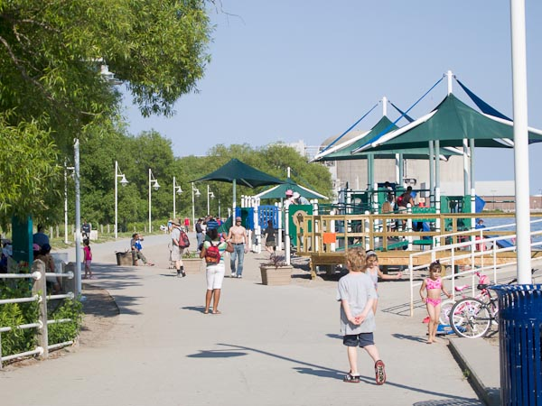
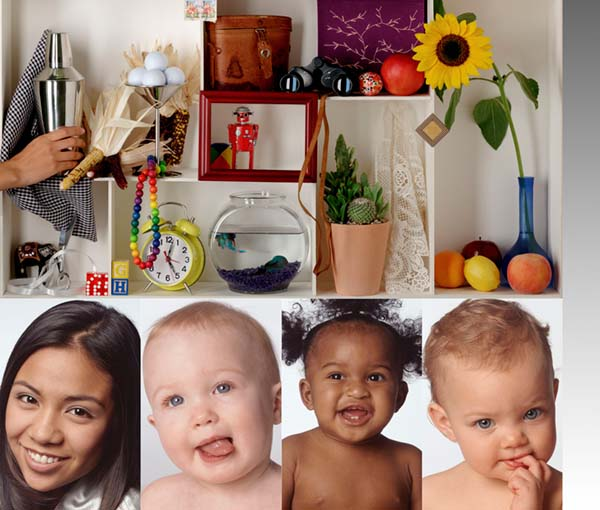
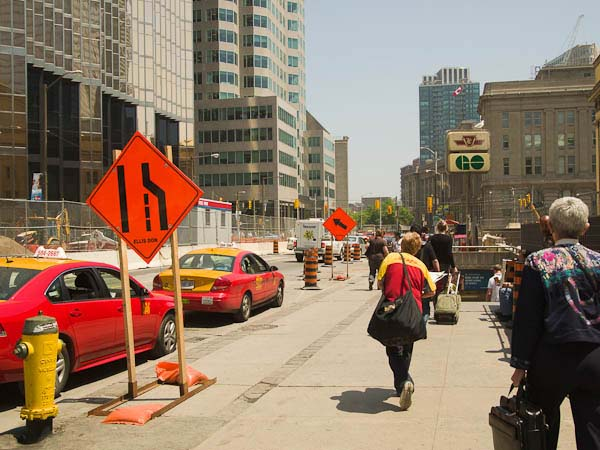

Coping with colour casts
Page 1 of 1. Version 1.0, ©2012 by Dale Cotton, all rights reserved.
Learning to identify casts
More than a decade into the digital photography era achieving colour neutrality is as simple as clicking on a "neutral" portion of a digital photo ... or so our software would have us believe. Strangely, few pictures have a "neutral" region, unless you count a blown highlight as being neutral white, but that unfortunately isn't acceptable. Colour neutrality out of the camera depends on our either setting a custom white balance before taking the picture or on the sophistication of the white balance algorithm built into the camera's imaging engine.
Looking at the world through rose-coloured glasses is generally taken to be an improvement; presumably then, looking at the world through green, blue, or grey tinted glasses would be negative. Subtle colour casts that most people can't consciously detect make a huge difference in how appealing an image is to the viewer. Even a perfectly accurate white balance for a picture taken in the bluish light of mid-afternoon is a decided downer.
But anyone who works extensively with photographs is frequently dealing with colour cast removal, whether it's correcting an image taken with an older digital camera, or with a film camera, or by a digital novice who used the wrong white balance, Unless you opt to work in b&w, photography pretty much forces you to become an expert in colour work. But before you can actually fix colour casts you first need to learn to see then.
Your monitor: most LCD computer monitors have a native colour temperature of 6500K or very close to it. This is the industry standard and is what you want to be using to view the following pictures. If you have a CRT or have deliberately changed the calibration of your LCD away from 6500, you won't be seeing the same colours I'm describing below.

Fig. 1: White balance comparison
Fig. 1 shows a scene taken at 5:30 PM in early July when the light had a colour temperature of 4950K. In comparison sunlight measured at the horizon is 5000K and vertically overhead is 5500K. Clicking on the various buttons takes you to cooler/bluer lighting as the numbers get smaller, and to warmer/yellow-orangier lighting as the numbers get larger. The 5500K version could be said to be neutral in that our eyes most readily identify whites seen in 5500K light as being pure white. But 4950K is what the camera recorded as being the actual colour temperature of that scene at that particular time of day.
WB fussiness: to my eye neither the 4950K nor the 5500K look quite right. It's a blue-sky day and the shadows of the scene tell us the sun was a little less than half way between overhead and on the horizon, which agrees with the 5:30 PM timing for a temperate zone latitude at that time of year. So I added a button for a colour temperature that's a little less than half way between 5000K and 5500K – namely, 5200K – and bingo! that looks spot-on to me. I've never approached a WB problem this way before, but if it works...

Fig. 2: Colour cast comparison
The studio shot shown above in Fig. 2 from PCI is likely familiar to anyone who's done much photography this past decade. I've cropped off the top portion to save on screen space, Below it are a 21 buttons that you can click on to move it away from its neutral state.
The red minus button subtracts 5% of its red value, the red minus minus button subtracts 10%, and the red minus minus minus subtracts 20%. In each case the missing redness causes the image to have a cyan (blue-green) colour cast, since both the blue and green portions of the image's colours are now relatively stronger.
The red plus button adds 5% to the red value, the red plus plus adds 10%, and the red plus plus plus adds 20%. In each case the image has a red colour cast, since extra red has been added.
Similarly, the green minus set of buttons introduce a magenta (reddish purple) colour cast; the green plus buttons add a green cast; the blue minus buttons add a yellow cast, and the blue plus buttons add a blue cast. Notice however that none of the blue minus buttons match the WB+ version, because sunlight is yellow-orange, not pure yellow; and none of the blue plus buttons match the WB- version because sky blue is not the same as the new-fangled violet-blue in the RGB colour model.
In order to learn to see pictures in terms of colour casts I suggest clicking on the +++ and --- buttons under Fig. 2 above, perhaps alternating with the Neutral button, until you begin to get a feel for the visual effect from adding or taking away a colour. Next, do the same with the ++ and -- buttons, until you can see the changes they invoke. The single + and single - changes are subtle – don't expect to be able to distinguish between them on the first day.

Fig. 3: Colour cast drill
Fig. 3 takes a different picture and provides buttons that introduce the same colour casts as in Fig. 2, except that buttons for the subtle single + and single - casts are not provided, and the order of the buttons has been srambled. So there is one button for each of the red, green, and blue +++, ---, ++, and -- variations; your job is to make a list of which cast belongs to which button. Even without resorting to the single + and single - variations, I think you'll find this exercise to be quite a challenge.
Learning to correct colour casts
Concept
To create the colour cast samples in Fig. 2 and Fig. 3 above I started with the neutral image open in Photoshop, then opened the Levels tool, then switched to the appropriate colour channel within the Levels tool.
Fig. 4: applying a red cast using the Photoshop Levels dialogue
As you can see from the screen shot in Fig. 4, I then changed the middle slider input number from the default of 1.00 to a different value. For the +++ casts I used 1.20, for the ++ casts I used 1.10, and for the + casts I used 1.05. Similarly, for the minus sequence I used 0.80, 0.90, and 0.95.
Fig. 5: applying a red cast using the Photoshop Curves dialogue
I could have done the same thing using the appropriate colour channel in the Curves dialogue, except being lazy I preferred typing in one number per cast rather than two. Nevertheless, to correct a cast I always reach for the Curves tool. Fg. 5 shows the simplest case of introducing a cast using a single point curve, starting from the centre, which essentially replicates a Levels change. It would be very nice of the world to arrange things such that the only casts I have to deal with were single point curves, but such is rarely the case.
Fig. 6: applying a complex cast using the Photoshop Curves dialogue
All of which is to say that the first two tools in the colour cast correction toolkit are Levels and Curves. The Learning to identify section of the tutorial will hopefully sensitize you to the difference between a colour-neutral image and the presence of a colour cast in an image. Even if you can't decide whether you're seeing too much magenta or too much red, for example, so long as you can see that something's out of wack, then you can open the Levels dialogue, push the centre slider left and right in each colour channel, and if you hit on a voilà position, simply click OK to accept that change. If not, go on to Curves and experiment with two-point S curves in the colour channels.
The idea for this tutorial came to mind as I laboured to scan boxes of family slides from the 1970s. Even though they had been properly stored, the chemical composition of the dye layers in the slides were in various stages of self-destruction. The red dyes had gone berserk. They were over-saturated in the darker values and even more bizarrely were de-saturated in the lighter values. The blue and green channels had both decayed but by different amounts and by different amounts from light to dark and from slide to slide. The scanning software has a complex and sophisticated interface, but not complex enough to offer me multi-point curve corrections in separate channels for both luminance and saturation. Thus, each scan had to be opened in Photoshop then individually tweaked to compensate for these degradations.
Since the photographer didn't kindly include a Gretag Macbeth Color Checker card in each frame, or even a neutral grey or white card, I had no absolute referrent to work from, and often couldn't even determine what the ballpark colour temperature should be. I used to pride myself on having a good eye for colour, but this was a challenge I rarely felt the equal of. Getting a believable skin tone out of such conditions was too often beyond my newly-humbled talents.
You'd think that when dealing with digitally captured images we could put all that behind us, but such is far from the case. Given the vagaries of mixed lighting and the tweaks digital camera manufacturers deliberately introduce into their JPEGs to satisfy customer demand for "punch" and "pleasing" colour, even just getting a realistic skin tone out of a JPEG is too often a herculean challenge. Nevertheless, let's have a go:
Example 1
{kind=link}
Fig. 7: Uncorrected snap shot (click for larger version)
Fig. 7 is an out-of-camera snapshot taken with an Olympus point&shoot in 2000. The automatic white balance even back then has worked a marvel in nicely handling what looks to be mixed lighting. We can see the tungsten-ness of the light in the recess in which the woman with parrot is standing. Nevertheless, the result is but one solution to the problem; what looks to me to be a compromise with the result that none of the whites are neutral. The door on the left, for example, is clearly painted white but is in fact some sort of vaguely pinkish colour. We also know that Tungsten light is orangish. Orange being a mixture of red and yellow, we can be on the look out for corrections to reduce red and/or add blue as one possibility to explore.
With that in mind, let's open Levels, switch to the red channel, and drag the middle slider to the left a bit to see what effect reducing red has:
Fig. 8: Reducing red
Fig. 8 shows a dramatically more neutral white in the door, so reducing red looks good.
Fig. 9: Adding blue
There's also the idea of adding blue, and arguably just a dab of +blue makes a further improvement – or perhaps I've just convinced myself that that's the case...
Fig. 10: Adding brightness
In any case, the red has been reduced more than the blue has been increased, resulting in a net darkening of the image. So going back into Levels and this time bumping up the RGB composite channel has the effect of a net brightening, which I've done to taste. Fig. 11 shows the result:
Fig. 11: Result
So even a seeming very simple cast that could be corrected entirely in Levels nevertheless took us into new territory: correcting for casts in two different channels in the same picture.
Example 2
It's worth noting that Photoshop has another tool that can handle certain double casts with ease. Fig. 12 show the view from an office tower in downtown Toronto. (The strange inverted cake tin building is called Roy Thompson Hall.) The window this picture was taked through has a greenish turquoise tint that affects the entire picture. If you look a the building on the far right, the protruding curved section of windows shows the glass tint very clearly, since the exact same glass has been used in both buildings.
At this point I suggest you download the larger version of Fig. 12 then use the Levels or Curves tool to try to remove the glass tint before reading further.
{kind=link}
Fig. 12: View from a window, downtown Toronto, out of camera JPEG (click for larger version)
If you did that, your thought process may have been that the opposite of green is magenta, but removing magenta didn't improve matters. Since turquoise is a shade of blue-green and cyan is too, you may have found that pulling back on the red was a significant improvement, plus a bit of reduction to blue helped a bit as well. Instead, go back to the uncorrected version then open the Hue/Saturation dialogue in Photoshop. The Hue slider changes all colours in a picture by shifting them left for cooler or right for warmer.
Fig. 13: using Photoshop's Hue/Saturation tool
Since blue and green are cool colours, moving the hue slider right increasingly warms the picture, and amazingly there is a point on the right, as we see in Fig. 13, that very nicely neutralzes the glass tint. So the upshot is when you're having trouble neutralizing a cast with Levels and Curves, give Hue/Sat. a try. Every so often it's the perfect tool for the job:
Fig. 14: Result
Example 3
For more of a challenge, here's the camera's JPEG of a random grab-shot of a Toronto street:
{kind=link}
Click on Fig. 15 and Fig. 16 for larger versions, then right click to download if you want to follow along.
Fortunately, I happen to have the raw for this shot, and a few tweaks from the default settings to match contrast, together with the application of a custom daylight profile for this individual camera gives the following result:
{kind=link}
Fig. 16: raw version
So what's with the camera JPEG? This is a fairly recent Olympus model and Olympus has a sterling rep for "pleasing" colour. The meta data even says I shot with a custom white balance – we might conclude I got that wrong, except that the raw version involves no change to WB or tint and it looks fine.
We've concentrated on colour casts so far, but the first thing you want to check when dealing with a JPEG is actually over-saturation. I keep the JPEG settings on my cameras at conservative values, but even then it's hard to get an out-of-camera JPEG without over-saturation of at least the warm colours (red-yellow-orange). This in spite the havoc this plays with skin colours as we see in Fig. 15. To compensate for this I opened the Hue/Saturation tool but this time used the second slider because I wanted to reduce saturation. I could have attempted to work with just the oranges, but the result I got by using the master slider was just what I wanted, as we see in Fig. 17 and Fig. 18.
Fig. 17: using Photoshops Hue/Saturation tool
Fig. 18: desaturation result
That's a great start, but if we want to match the raw colours more closely we have more work to do. It's hard to know what the colours of the surrounds should be, but skin colours are something we're all intimately familiar with and therefore more critical of. The difference in skin colours between Fig. 18 and Fig. 16, however, take us into new territory: there's actually a double cast at play here. The blue channel is higher in Fig, 15, adding blue to the skin tones, while the green channel is down, adding magenta. That's the sort of thing that can drive a person crazy and is why you don't want to be doing this for a living...
So if we match Fig. 18 for skin colour by adding green and subtracting blue in Levels or (single point) Curves we get:
Fig. 19: double cast compensation using Levels
Now the skin tones are very much in the correct ballpark – but look what's happened to the BMO (Bank of Montreal) blue panel on the right. Levels and even multi-point curves are not the right tools if you want to handle a problem as complex as this. Instead, we need to break out Photoshop's Replace Color dialogue, use the eye dropper to build up a selection of the various skin tones in the picture, then bump the Hue slider over to the right:
Fig. 20: using Replace Color to tweak only skin colours
Fig. 21: results of Replace Color
Now that the skin colours are fairly well matched we could use Replace Color again to tweak the beiges of sidewalk, clothing, etc. Then yet again to match the BMO and street sign dark blue.
* * *
Oh yes: you're probably wondering how close you came to getting the drill in Fig. 3 correct. The solution is here.